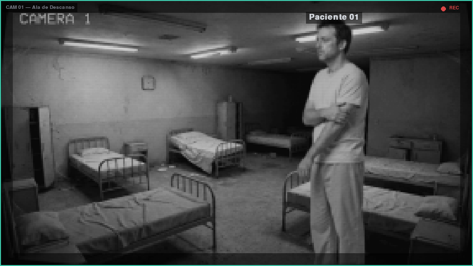

Encontre. Acompanhe.
Alterne entre cinco câmeras. Os pacientes mudam de sala, e a última leitura do VIGIA pode estar desatualizada. Reencontre-os para saber como estão.
05 câmeras · informação limitadaBRASIL, 1996 / TURNO 00H–06H
O relatório diz que
nada aconteceu.
Daniel e Elias contam outra história. Assuma o plantão, cuide dos pacientes e descubra o que o VIGIA está deixando de fora.

↳
Escute primeiro.
Confira depois.
01 / O JOGO
Hospital Nossa Senhora da Piedade, 1996. Você é Marina Duarte, uma pesquisadora chamada para acompanhar o plantão e avaliar o VIGIA, o sistema de observação do hospital.
Daniel e Elias relatam batidas nos corredores e falhas de luz. Nos arquivos, a conclusão é sempre a mesma: SEM OCORRÊNCIAS.
Entre câmeras, pedidos e protocolos, escute os pacientes e guarde o que encontrar. Ao amanhecer, a assinatura no relatório será sua.
SUSPENSE PSICOLÓGICO · VIGILÂNCIA · INVESTIGAÇÃO
02 / COMO JOGAR
Três minutos de plantão.
A sua atenção precisa estar em mais de um lugar.
Alterne entre cinco câmeras. Os pacientes mudam de sala, e a última leitura do VIGIA pode estar desatualizada. Reencontre-os para saber como estão.
05 câmeras · informação limitadaVá à farmácia, separe de um a três medicamentos fictícios e entregue ao paciente. A bandeja tem três espaços — e o outro paciente continua precisando de você.
06 medicamentos · até 03 pedidos por noiteCom o paciente visível, inicie o protocolo e segure o comando por quatro segundos. Depois, há uma recarga individual. O plantão continua enquanto você atende.
Protocolo preventivo · recarga por pacienteHá três registros opcionais para descobrir e guardar. Ao amanhecer, decida o que assinar. As suas anotações e a sua escolha mudam o epílogo.
03 registros · uma decisão ao amanhecerClique nas abas e nos botões do jogo ou use os atalhos ao lado.
03 / DENTRO DO VIGIA
Explore as imagens do jogo.
Clique na captura para ver os detalhes.
É aqui que começa o acompanhamento de Daniel. Observe a estabilidade e escute o que ele tem a dizer.
01 / 05Imagens da interface do jogo. Cenários pixelizados, textos e controles nítidos.
04 / ASSUMA O PLANTÃO
Uma noite. Dois pacientes.
E uma versão dos fatos que depende de você.
O link de download será disponibilizado aqui.
Baixar o jogoA noite jogável dura 3 minutos; a abertura e o encerramento ficam fora desse tempo.
POR TRÁS DO JOGO Desenvolvido para a SNCT, com inspiração no legado de Nise da Silveira e na humanização do cuidado em saúde mental. Uma história fictícia sobre escutar, observar e questionar os registros.